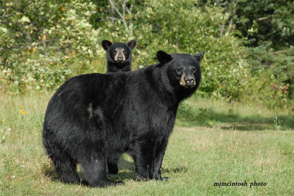
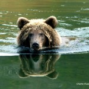
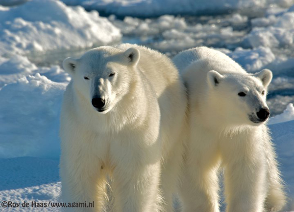

1-North American Black Bear – Ursus Americanus – colour – black, bluish-black, brown, white (Kermode or Spirit bear). The North American Black Bear is the most common bear in North America ranging from the State of Florida north, into Canada and north to Alaska. The black and brown colour phase of the black bear is common. The white colour phase is more rare occuring in north western British Columbia, Canada. The black bear is omnivorous. Their diet is mostly vegetable matter. Males reach full size at about 8 years of age. Females mate and produce cubs at 5 to 7 years of age, 8 years and older in the boreal forest regions(Ontario). Males weigh up to 280kg(600 pounds), occasionally much more. Black bears live up to 25 years in the wild. Older bears have been documented, however the majority of bears never reach old age due to human activity (hunting). Credits-two white(Kermode)black bear photos-Charlie Russell, text, photos-Mike McIntosh
2-Brown Bear – Ursus Arctos – Several subspecies. The Brown Bear can be found in Alaska, western Canada,and parts of Washington, Montana and Wyoming. Small individual populations are scattered throughout parts of Europe and Asia. Russia has a healthy population of brown bears currently. Brown bears range in colour from almost black, brown to very light brown or blonde. Size varies greatly depending on geographic location and general food availability. The largest bears, the “Big Browns” exist along the coast of Alaska and Russia growing to very large sizes rivaling that of the Polar Bear. The interior bears of the North American Rocky Mountains (Grizzly Bear) and the mountains of Europe tend to be much smaller. The really big bears (1500pounds/700kg and bigger) are now very rare.Credit -text- Mike McIntosh, photographs of brown bears – Charlie Russell-www.cloudline.ca .
3-Polar Bear – Ursus Maritimus Polar bears are among the largest bears in the world. Adult males may reach 800 kilograms (kg) or 1760 pounds (lbs). In Ontario, the largest male bear recorded from “live capture” research studies weighed 654 kg (1439 lbs). The average weight of male polar bears in Ontario is about 500 kg (1100 lbs). Adult female bears are smaller and average around 300 kg (660 lbs); their peak weights do not usually exceed 400 kg (880 lbs). Credit -text- Ontario Ministry of Natural Resources. polar bear photographs – Roy de Haas/Agami.nl
 Go to north american black bear Go to Brown bear